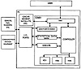

by Abraham Kandel
CRC Press, CRC Press LLC
ISBN: 084934297x Pub Date: 11/01/91
|
|
Fuzzy Expert Systems
by Abraham Kandel CRC Press, CRC Press LLC ISBN: 084934297x Pub Date: 11/01/91 |
| Previous | Table of Contents | Next |
Mordechay Schneider
Joseph M. Perl
Abraham Kandel
Reliable and efficient communication is crucial in many situations where the success or failure of an endeavor depends on the ability to transmit and receive important information. Such situations abound in military applications as well as in civilian ones such as in the merchant navy, oil exploration, aviation, etc. At present, although a variety of communication means and equipment is available, the success or failure of the communication depends largely on the operator's expertise. This is particularly evident in ionospheric HF communication,1 although it is true on other communication channels as well.
COMEX is an intelligent expert system designed to perform the tasks presently performed by an expert operator. Thus, it selects the proper communication channel (HF, VHF, UHF, satellite, telephone) for the desired communication (voice, data); it selects the proper path (direct, relay) and equipment to be used (modem, radio, antenna); it selects the equipment operating parameters as well as the frequency and protocol to be used; and finally, it performs the communication. COMEX employs an initially loaded data base, which is automatically updated by the expert system learning capability. In addition, it collects and updates statistical data concerning channel and equipment availability and communication performance. COMEX communicates with utility programs running on the same processor (IONCAP, MINIMUF, satellite visibility prediction and BER performance evaluation) as well as with external units such as frequency management systems.1-7
These frequency management systems measure channel occupancy, signal-to-noise levels, (pseudo-) bit error rates, fading rates on time varying channels, multipath propagation conditions, and Doppler shifts. They can operate autonomously or under the control of the expert system, depending on the operation mode of COMEX.
COMEX runs on an IBM compatible PC, which also acts as the communication station controller. When the station equipment (radios, modems, terminals) has remote control capability, it will remotely control the equipment, set the selected operation modes, and perform the communication.
COMEX is intended for the use of novice operators and is not limited to communication station or equipment constraints. During the initial setup, COMEX prompts the operator to provide all the information necessary for an intelligent and expert decision on solving the communication problem at hand. Its intelligence enables it to interface with a variety of channel monitoring sensors, and accept and use the information provided by these autonomous sensors to achieve an optimal solution to the communication problem at hand.
Figure 1 presents the architecture of COMEX, which is composed of a number of modules. The man-machine-interface (MMI) module handles the interactions between the user and COMEX. Through the MMI module, the user loads and updates the “user data base”. This data base accepts data from external sensors as well. Such external sensors are frequency management and communication monitoring devices,1 which communicate with COMEX via a standard RS-232 serial I/O port. For example, in the HF band, COMEX can operate with a variety of sensors, including MESA,1 AUTOCAL,7 AUTOLINK,6 SELSCAN,5 etc.
The main part is the CONTROLLER, which contains the overall operating system that controls the operation of the various modules. The CONTROLLER operates the EXECUTE module, which carries out the communication with the communication station equipment via a serial I/O port. Thus, when the expert system is ready to commence communication (transmit or receive), the EXECUTE module performs this task. In addition, the CONTROLLER supervises the operation of a “statistical data base”, which accumulates communication statistics in real time. Certain information, such as the sample distributions of various channel parameters, are also accumulated in this data base by the external sensors (see Figure 2). It also supervises the activities of MMI, especially the handling of the data base provided by the user and by the external sensors. Finally, the CONTROLLER employs the three knowledge bases (KBs) during the inference procedure. The CONTROLLER is in fact an expert system which also manages the various functions performed by COMEX.

Figure 1 COMEX architecture.
| Previous | Table of Contents | Next |
){kind=link}